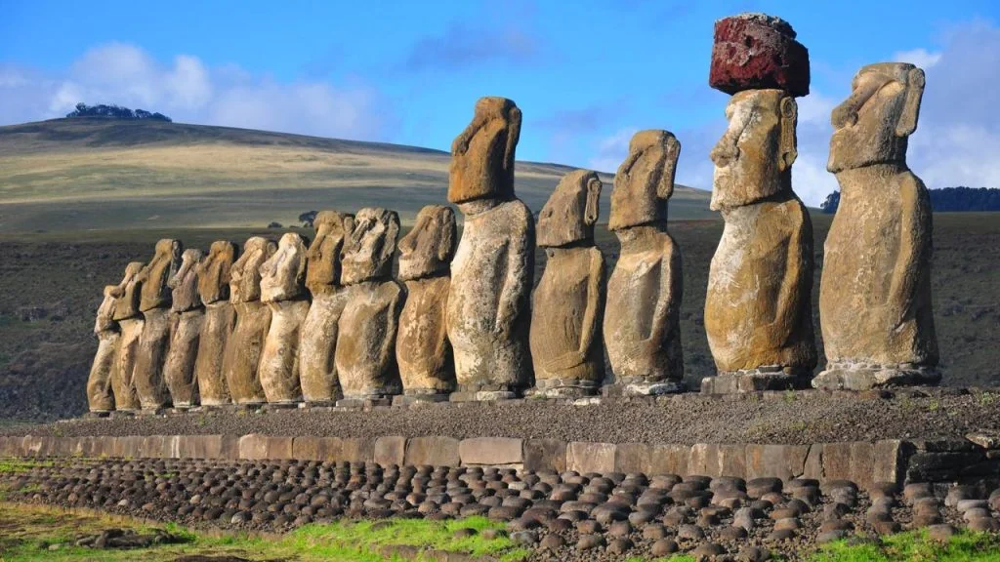

Os Enigmas e os Moais da Ilha de Páscoa

Moais em Rapa Nui (Ilha de Páscoa)
A remota Rapa Nui (Ilha de Páscoa), situada no meio do Oceano Pacífico, abriga uma das maiores riquezas arqueológicas e misteriosas da humanidade. As colossais estátuas de pedra conhecidas como Moais foram esculpidas pelos antigos habitantes polinésios entre os séculos XIII e XVI.
A engenharia utilizada para transportar e erguer estes monólitos de toneladas por toda a ilha continua a desafiar a ciência moderna. Estas esculturas representavam os antepassados sagrados e a proteção espiritual das tribos locais sobre o território e o mar.